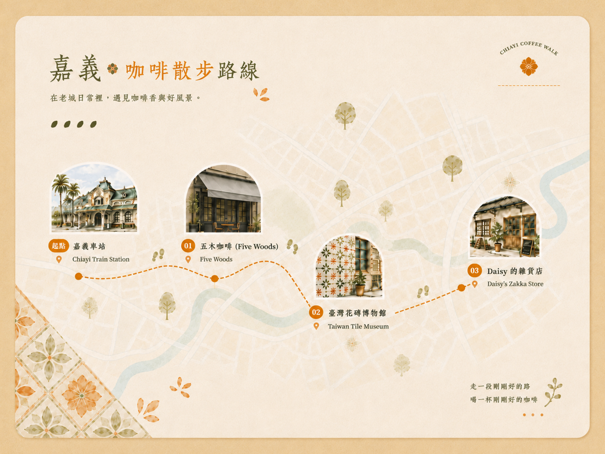

這條路線從嘉義火車站出發，依序安排咖啡、花磚與老屋空間。下午時間充足時，可以一路走到 Daisy 的雜貨店；只有兩小時或遇到下雨時，則保留 Five Woods 五木咖啡與臺灣花磚博物館。
為什麼選這三站？
這條路線不是單純列出三個地點，而是依照半日旅客的需求安排：Five Woods 五木咖啡負責抵達後的第一杯咖啡，臺灣花磚博物館補上地方文化內容，Daisy 的雜貨店則適合作為時間充足時的最後一站。三站不必全部完成，可以依回程時間、天氣與體力調整。
路線總覽
嘉義火車站 → Five Woods 五木咖啡 → 臺灣花磚博物館 → Daisy 的雜貨店
完整下午路線

本時間軸以 Daisy 的雜貨店為終點，不包含返回嘉義火車站的時間；實際步行時間請以當日導航為準。
第一站：Five Woods 五木咖啡
火車站附近的咖啡起點
Five Woods 五木咖啡安排在第一站，是因為它適合先完成咖啡與休息需求，再銜接後面的文化行程。時間有限時，這一站也能和臺灣花磚博物館組成前半段短程路線，不必繼續前往 Daisy。
第二站：臺灣花磚博物館
咖啡後的地方文化行程
臺灣花磚博物館安排在第二站，讓這趟行程不只是一連串咖啡店。咖啡後轉入花磚與建築裝飾的地方文化內容，能讓前半段行程產生明確變化；參觀結束後，再依剩餘時間決定前往 Daisy 或返回車站。
第三站：Daisy 的雜貨店
老屋咖啡作為午後終點
Daisy 的雜貨店安排在最後一站，適合時間充足、不急著返回車站的人。這一站可以停留較久，作為下午行程的收尾；需要趕火車時，則應在臺灣花磚博物館後直接返回車站。
兩小時內怎麼安排？
嘉義火車站
→ Five Woods 五木咖啡
→ 臺灣花磚博物館
→ 返回嘉義火車站
只有兩小時時，可以先到 Five Woods 五木咖啡，再依回程時間安排臺灣花磚博物館，參觀後直接返回嘉義火車站。這個版本不安排 Daisy 的雜貨店。
下雨時怎麼走
小雨：嘉義火車站 → Five Woods 五木咖啡 → 臺灣花磚博物館 → 依雨勢與時間決定是否前往 Daisy
大雨：嘉義火車站 → Five Woods 五木咖啡 → 臺灣花磚博物館 → 返回嘉義火車站
下雨時優先保留 Five Woods 五木咖啡與臺灣花磚博物館，兩站都以室內停留為主，也能減少後段較長的移動。雨勢轉小、時間仍充足時，再依即時導航決定是否前往 Daisy；雨勢較大時，參觀完博物館後直接返回車站。
常見問題
1. 嘉義火車站附近有適合當第一站的咖啡廳嗎？
有。這條路線選擇 Five Woods 五木咖啡作為第一站，喝完咖啡後可以繼續前往臺灣花磚博物館。
2. 完整路線需要多久？
建議預留一個下午，實際時間會受到各站停留時間、交通方式與當天狀況影響。Daisy 的雜貨店是路線終點，返回嘉義火車站的時間需要另外計算。
3. 只有兩小時可以怎麼安排？
只有兩小時時，可以先到 Five Woods 五木咖啡，再依回程時間安排臺灣花磚博物館，參觀後直接返回嘉義火車站。這個版本不安排 Daisy 的雜貨店。
4. 全程適合步行嗎？
前半段可依體力步行；前往 Daisy 前，先看即時導航，再決定步行或改搭車。
5. 店家營業時間固定嗎？
營業時間與店休日可能調整，出發前請查看官方網站、官方社群或地圖資訊。
資料來源與查核說明
店家營業時間、店休日、座位與館舍開放資訊可能調整，出發前請查看官方網站、官方社群或 Google Maps 的最新資訊。
- Five Woods 五木咖啡 官方 Instagram Google Maps 核對日期：2026-07-29
- 臺灣花磚博物館 官方網站 Google Maps 核對日期：2026-07-29
- Daisy 的雜貨店 官方社群 Google Maps 核對日期：2026-07-29
這條下午路線從嘉義火車站出發，串連咖啡、花磚與老屋空間。時間不足或遇到下雨時，也能只保留前半段，再依當天狀況調整後續行程。